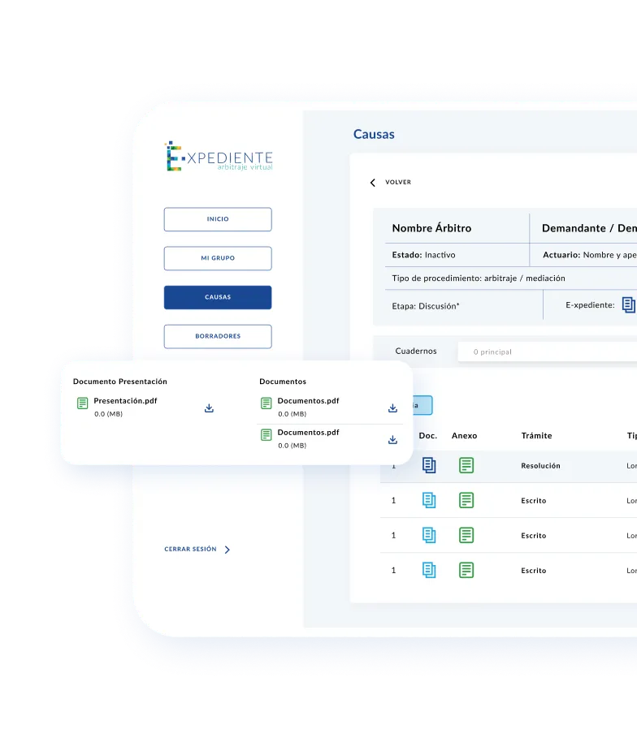
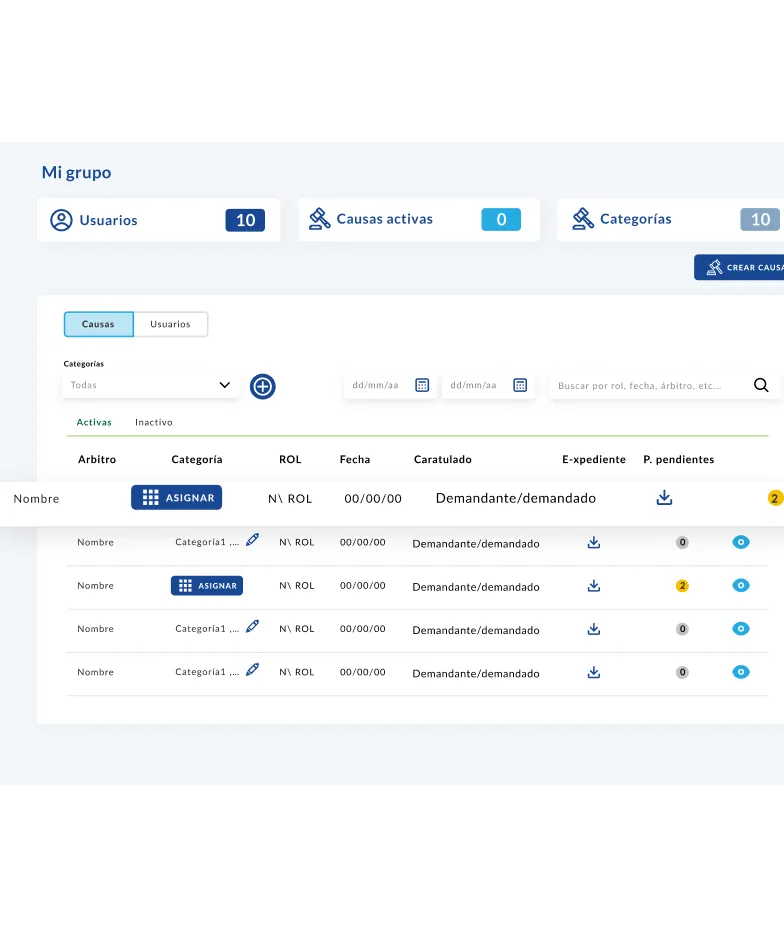
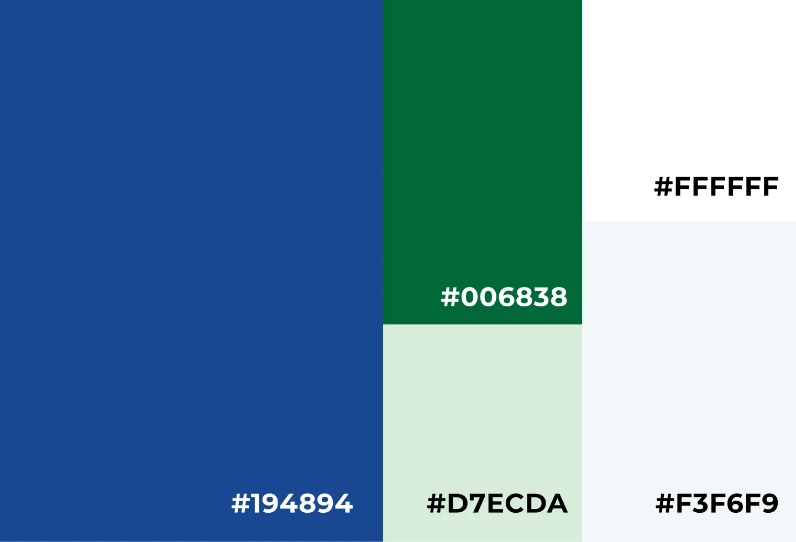
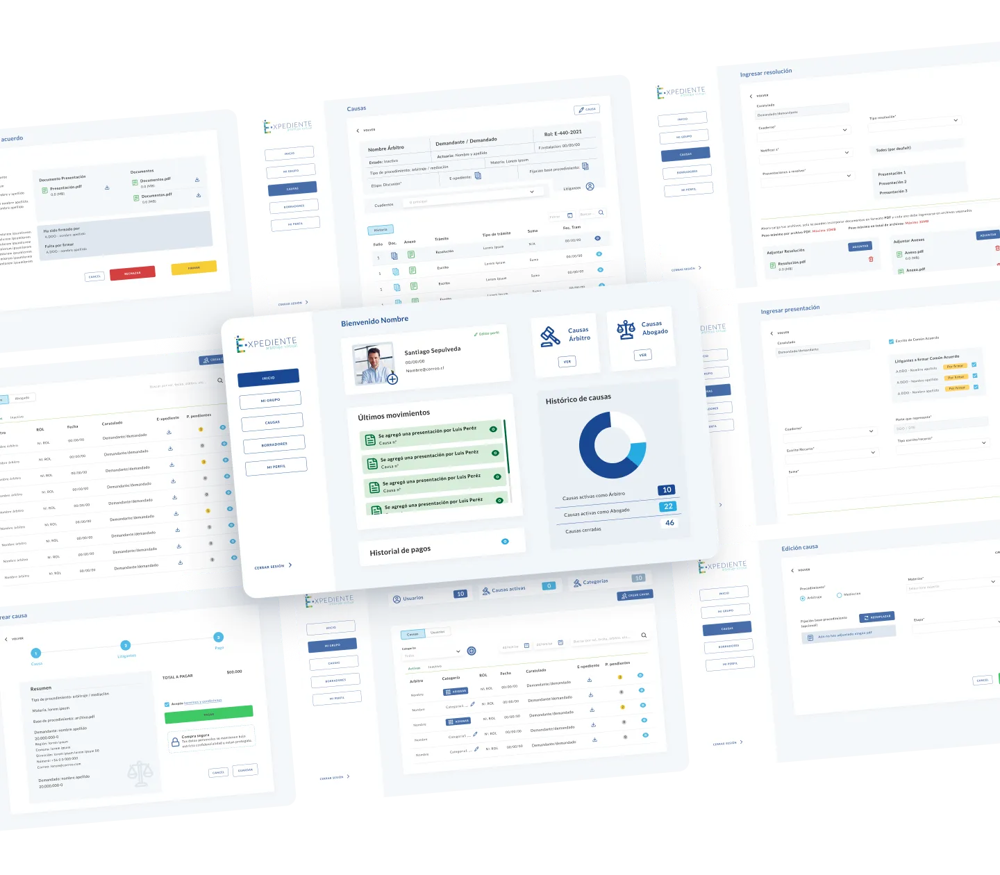
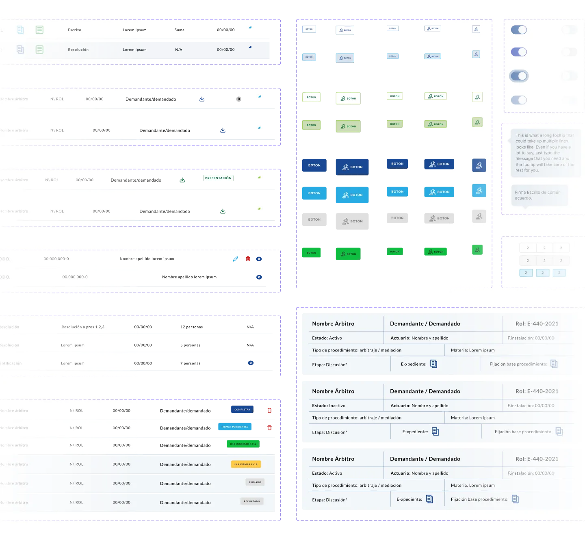
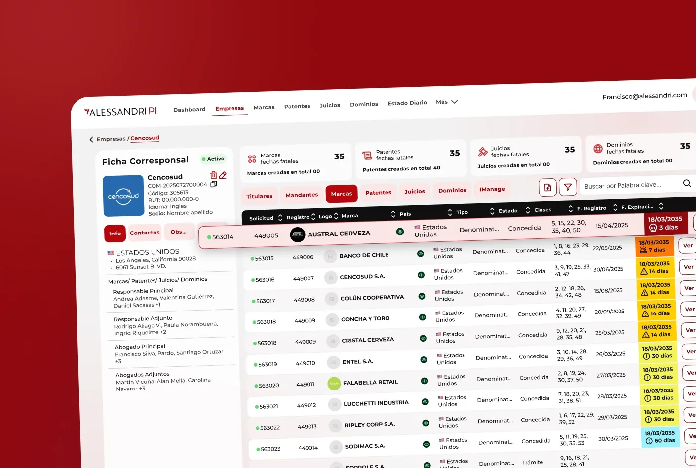
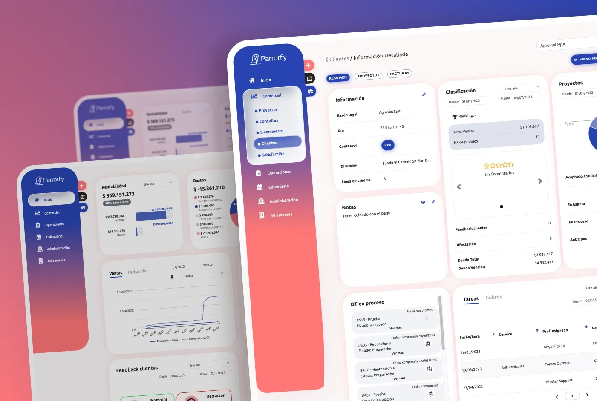
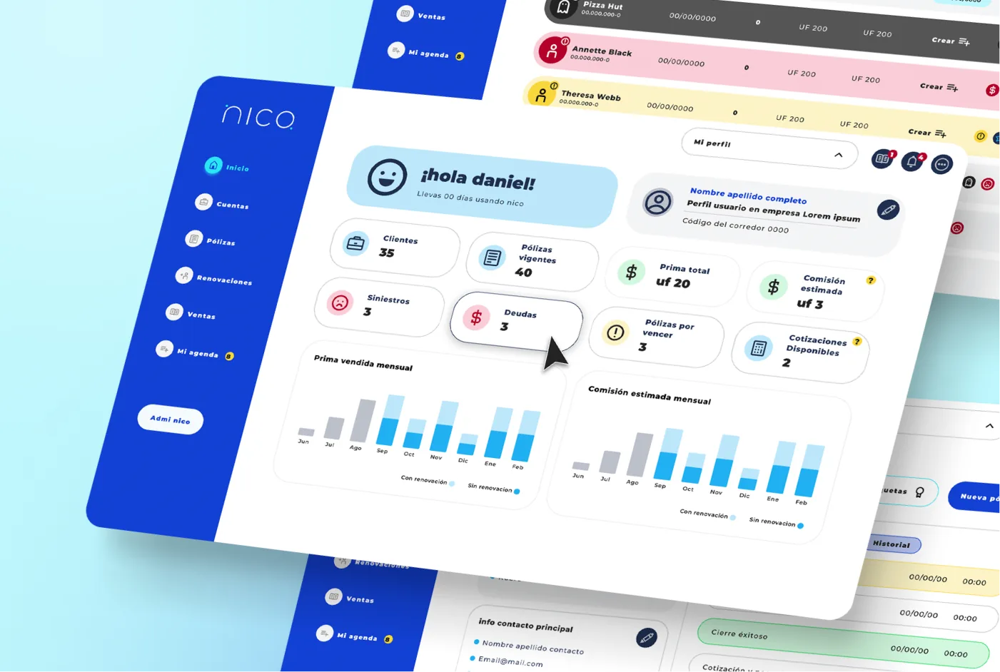

Alessandri
Rediseño de Plataforma Legal
UX/UI
Rediseño end-to-end basado en research con usuarios reales para simplificar flujos complejos en la plataforma interna de un estudio de abogados.
Diseño UX/UI end-to-end desde cero
Diseño end-to-end de una plataforma legaltech para digitalizar la gestión completa de arbitrajes y mediaciones.
Los abogados que gestionan arbitrajes y mediaciones privadas lo hacen sobre papel: carpetas, correos y llamadas para coordinar a cada parte. El encargo fue diseñar E-xpediente desde cero: una plataforma legaltech que digitalizara el proceso completo, desde los documentos del expediente hasta las notificaciones y el acceso seguro de cada participante.



Los abogados de arbitraje y mediación gestionan sus casos de forma manual: documentos en papel, coordinación por correo y llamadas para cada actualización. Esa falta de estructura genera demoras, errores y riesgos legales que ninguna de las partes puede permitirse.
El reto fue diseñar una plataforma que digitalizara el proceso arbitral completo, con trazabilidad, acceso controlado y notificaciones automáticas para todos los involucrados.
Mantener el expediente en papel implicaba buscar documentos entre carpetas, perder versiones actualizadas y depender de la presencia física para acceder a información crítica del caso.
Coordinar árbitros, mediadores y partes involucradas a través de correos y llamadas generaba demoras, confusión sobre acuerdos tomados y falta de trazabilidad en el proceso.
Los documentos físicos y los correos no ofrecen control real sobre quién accede a qué. En un proceso arbitral, esa falta de control representa un riesgo legal y ético para todas las partes.

Una plataforma integral que aborda múltiples aspectos de la gestión legal, facilitando la digitalización y
organización de documentos.
La plataforma ofrece una variedad de herramientas, incluyendo:
Digitalización de documentos
Todos los
archivos del expediente se cargan y organizan en la plataforma, eliminando el papel del proceso y
permitiendo acceder a cualquier documento en segundos, desde cualquier lugar.
Notificaciones automáticas
La plataforma
avisa a cada parte cuando hay una acción pendiente, un plazo próximo o un documento nuevo.
Sin depender de recordatorios manuales ni correos que se pierden.
Acceso remoto seguro
Árbitros, mediadores y
partes ingresan a la plataforma desde cualquier dispositivo, con acceso controlado según su rol en el
proceso y sin exponer información sensible.
Mejorando así la colaboración, la eficiencia operativa y la seguridad de la información para abogados y sus clientes.


Los abogados gestionan sus arbitrajes y mediaciones de forma 100% digital, sin depender del papel ni de la presencia física.
El expediente virtual organiza automáticamente cada actuación de forma cronológica y auditable.
El proceso es más rápido y claro para todas las partes, sin llamadas ni correos para coordinar cada paso.
Notificaciones automáticas alertan a cada parte cuando hay una acción pendiente, un plazo próximo o un documento nuevo.
Todos los participantes de la causa tienen acceso a ella desde cualquier parte del mundo. Una vez realizada la actuación, se registra y no puede ser modificada.
Almacenamiento de datos del expediente en la nube, con acceso exclusivo para quienes forman parte del caso.




Compañía Nnodes
CTO Franco Restaino
Diseñador UX/UI Erika Pinedo
Desarrolladores Juan Hayashi
- Todos los derechos reservados-

Rediseño end-to-end basado en research con usuarios reales para simplificar flujos complejos en la plataforma interna de un estudio de abogados.

Diseño end-to-end de un ERP todo en uno para PYMEs: cotizaciones, ventas, pagos, órdenes de trabajo y facturación en un solo flujo.

Diseño de una plataforma SaaS B2B para corredores de seguros desde cero: gestión centralizada de pólizas, clientes y renovaciones para reemplazar planillas y correos.